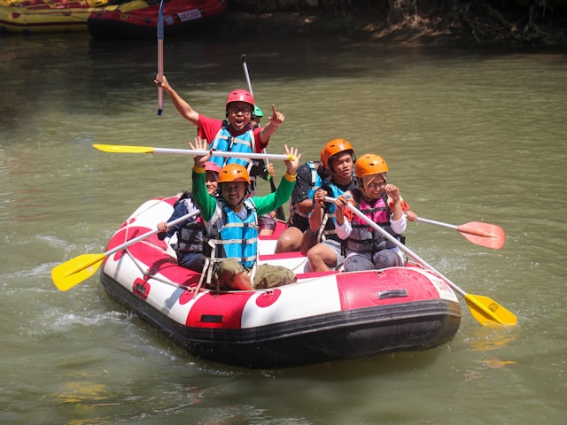
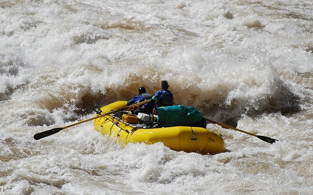

Home
About
Trips
Contact
Home
About
Trips
Contact
White Water Rafting Adventures
| Trip Location | Rapid Class | Age Restriction | Expected Time |
|---|---|---|---|
| Castle Valley, Ut (Colorado River) | 1-2 | 4+ | 1-3 Days |
| Desolation Canyon, Ut (Green River) | 2-3 | 5+ | 4-6 Days |
| Gates of Lodore, Ut (Green River, Yampa River) | 2-3 | 12+ | 3-5 Days |
| Cataract Canyon, Ut (Colorado River) | 3-5 | 14+ | 2-6 Days |
Castle Valley
The most amazing thing about the Utah Rivers is they all have their own Temperments. Starting out, Castle Valley Utah has a very calm Gem of a river. The Colorado River gives our beginning rafters an injoyable experience with plenty of sites to take in. For ages 4 and up, a 1 to 3 day experience it is a great chance to get your feet wet!
Contact Us Today: Desolation Canyon
The Green River Desolation Canyon Trip is one
of the Big favorites for the White Water Rafting community.
It is a multi day trip which you traverse 96 mile
with over 60 rapid sections. One of the big reasons this
trip is so loved is we go through the largest
wilderness research area and pristine archelogical
sites left behind by the Fremont people 2000 years ago!
 Contact Us Today:
Contact Us Today:
Gates of Lodore
Lodore Canyon on the Green river then meeting with
the Yampa River this Trip is for intermidiate level rafters.
This trip will take you through Dinosuar National Monument
where you have the oppertunity to see million year old rock
and enjoy big level 3 rapid waves that will leave you soaked.
This is another great option for those looking for a challenge!
 Contact Us Today:
Contact Us Today:
Cataract Canyon
The Cataract Canyon is definitely the definition of Wild classes 3, 4, 5 rapids depending on the tim of year. This is on the Colorado River in Utah, it runs through the Canyonlands National Park it is claimed to be the most Adventures in the Nation! It is also great for the oppertunities to explore ruins and see huge fields of petrified wood. Great for those looking for adventure!
 Contact Us Today: